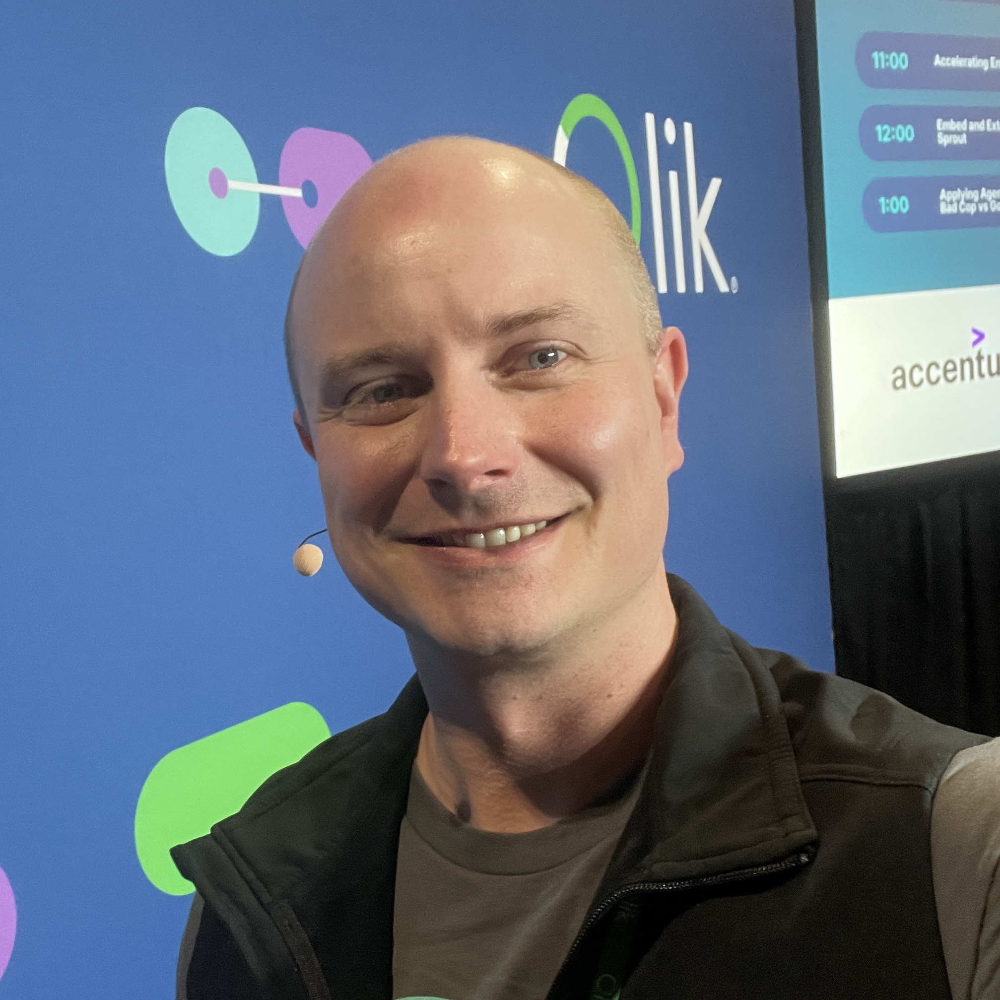
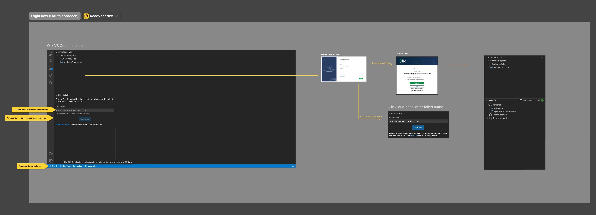
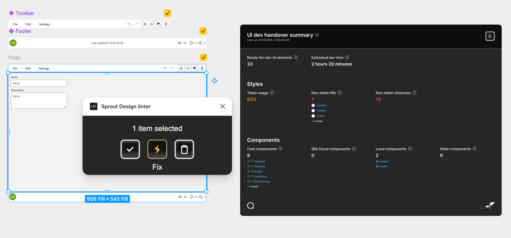
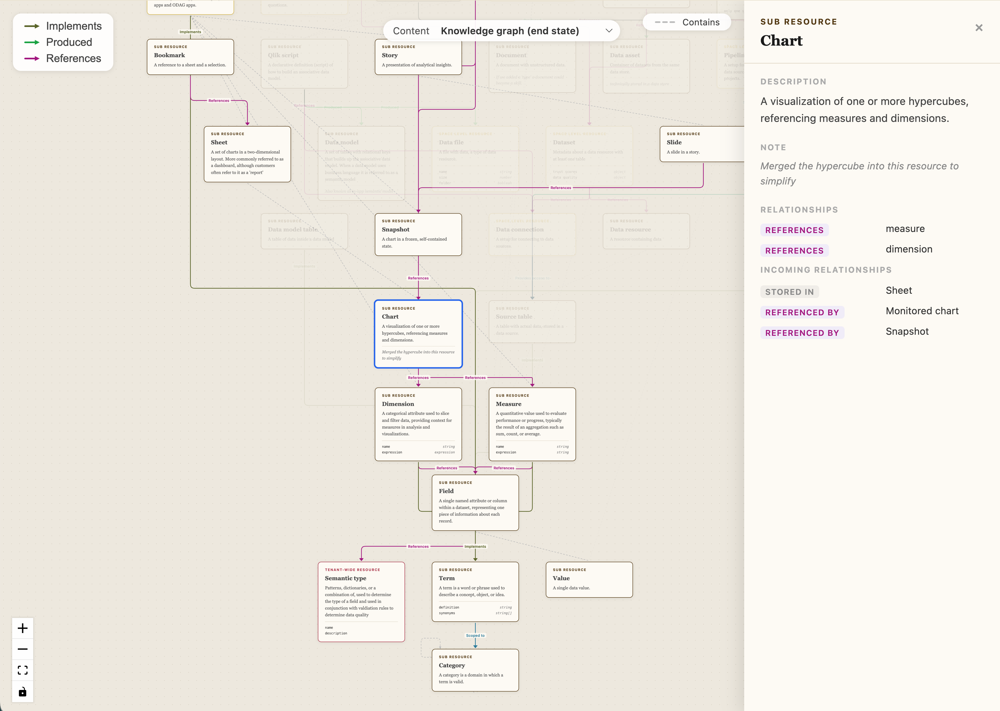
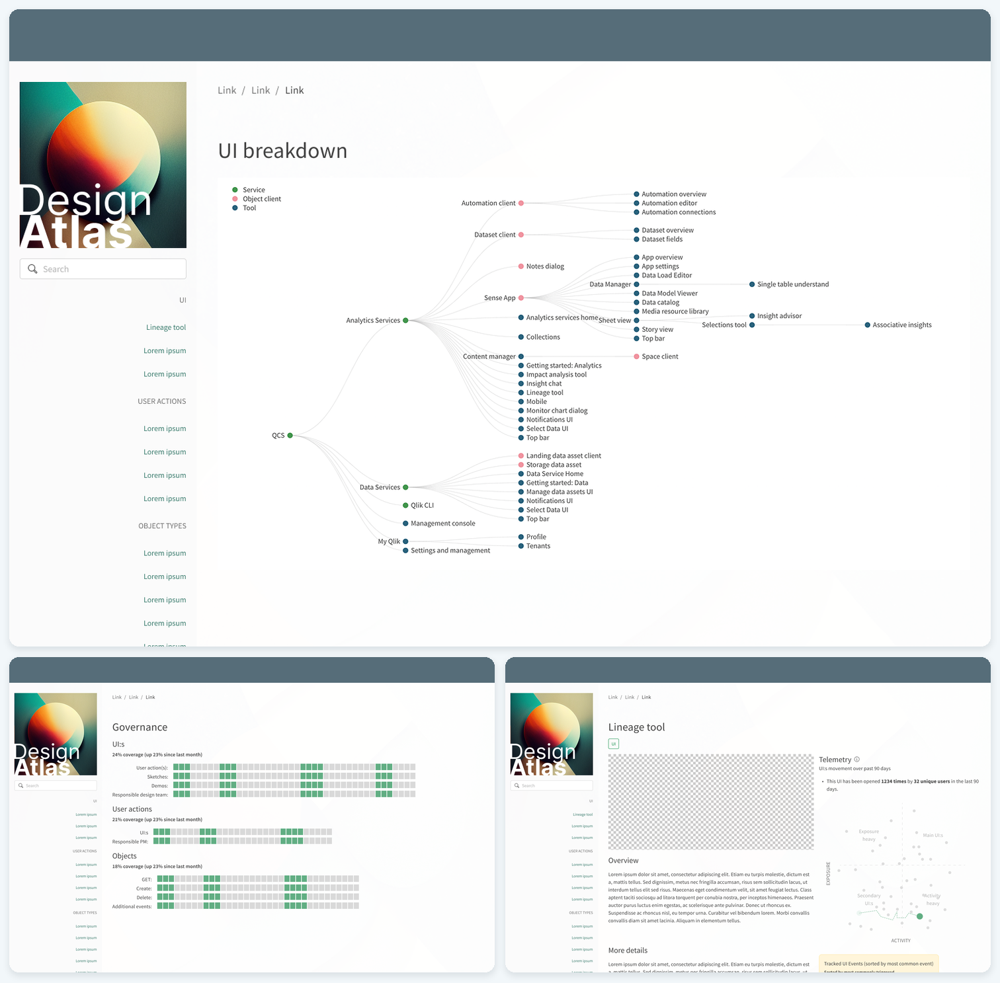
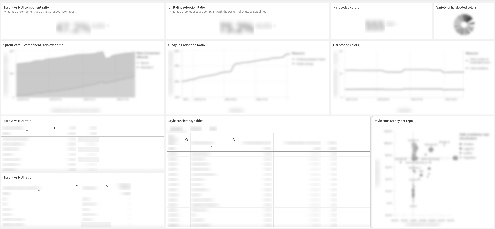
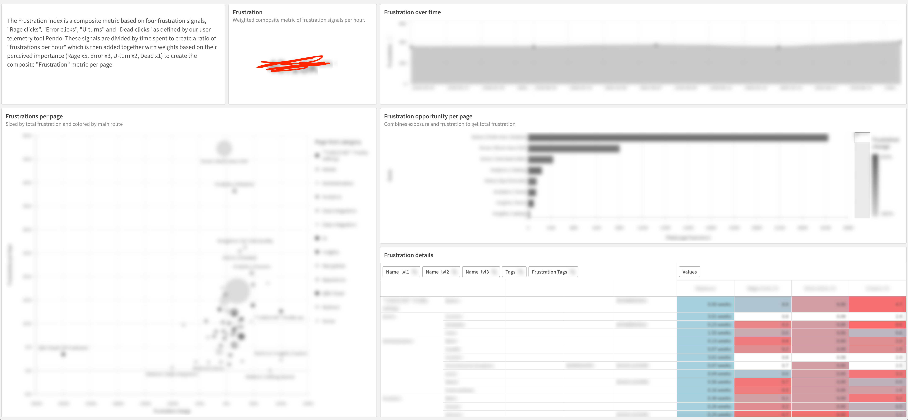
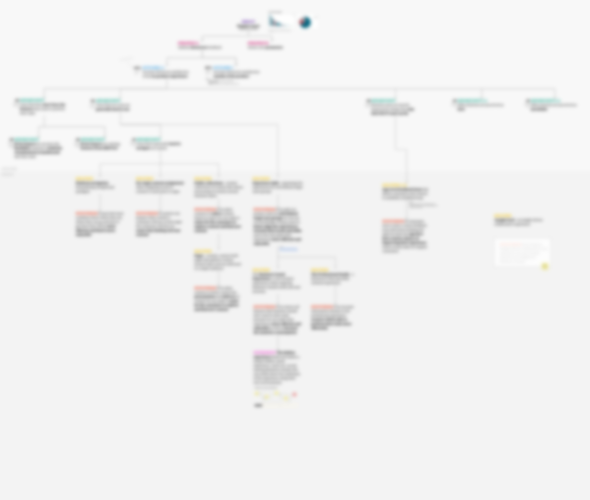

Product builder across AI, data & analytics, visualizations, and design systems. I turn complex problems into production-ready tools, systems, and experiences.
Imagery below comes from mostly from internal tools and dashboards; sensitive figures are redacted in the screenshots.




Images show sketch versions of Design Atlas; the real platform data is company-sensitive and cannot be shared.



